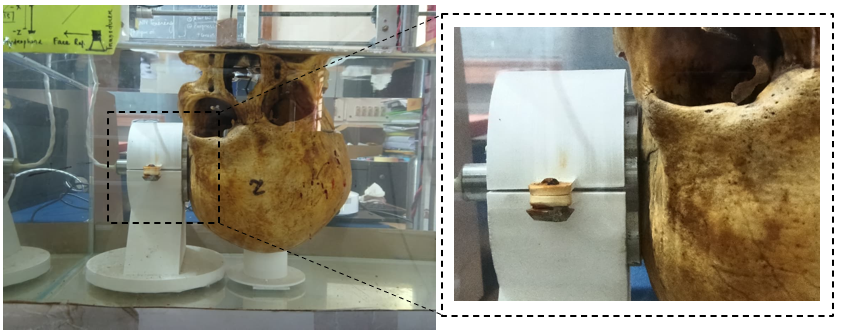

Transcranial Focused Ultrasound Stimulation Device
The Transcranial focused ultrasound stimulation device is a new advancement in the field of neuromodulation
During my tenure as Student Coordinator at the Veer Surendra Sai Space Innovation Center (VSSSIC) from January 2023 to January 2024, I had the opportunity to work extensively on VSLV (VSSUT Satellite Launch Vehicle)—a flagship student rocketry initiative recognized by ISRO under the MoU with VSSUT Burla. My contributions to the project were centered around the development of critical onboard intelligence and system-level integration. I was actively involved in the flight computer development, where the focus was on building a reliable embedded system capable of handling real-time operations during flight. This included interfacing multiple sensors, ensuring robust data acquisition, and maintaining system stability under dynamic conditions. A significant part of my work revolved around sensor data fusion, combining inputs from IMUs and other onboard sensors to obtain accurate estimates of the rocket’s state parameters such as orientation, velocity, and altitude. This required implementing and testing algorithms that could operate efficiently within hardware constraints while maintaining precision.
In parallel, I worked on PCB design for the avionics system, translating circuit-level requirements into manufacturable and reliable board layouts. Emphasis was placed on noise minimization, signal integrity, and compact integration of components suitable for aerospace environments. On the analytical side, I contributed to algorithm development and MATLAB-based simulations, particularly for modeling flight behavior and validating system performance prior to physical testing. This included rocket trajectory calculations, where theoretical models were developed and simulated to predict flight paths, optimize launch parameters, and ensure mission safety. Overall, my role in VSLV allowed me to work at the intersection of embedded systems, control theory, and aerospace engineering—gaining hands-on experience in designing, simulating, and integrating complex systems for a real-world launch vehicle platform.
Focused Ultrasound Transducer Development
The primary component of the YFUS device is the focused ultrsonic transducer. We procured spherical cap geometry piezo crystals and i started working on the design and development of the transducer.
Power Amplifier Module Design
To drive the developed transducer, I started working on a power amplifier module using OPA455 amplifier IC.
3 Axis Motion Setup for Acoustic Scanning
In order to validate the focused acoustic field of the transducer, I designed a standard 3 axis motion setup and equiped it with a hydrophone to scan. The hydrophone was also acompanied with a preamplifier to gather the smallest of pressure measurements accutrately.
Project Gallery